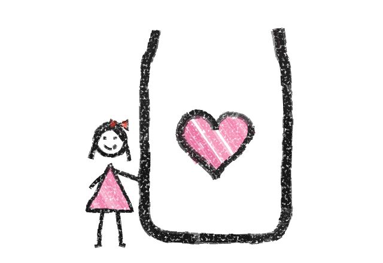
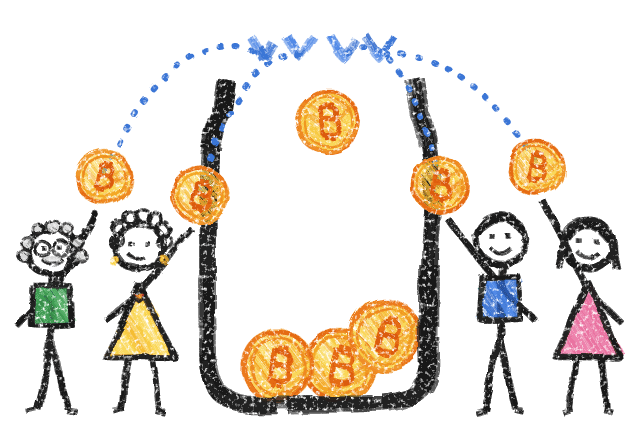
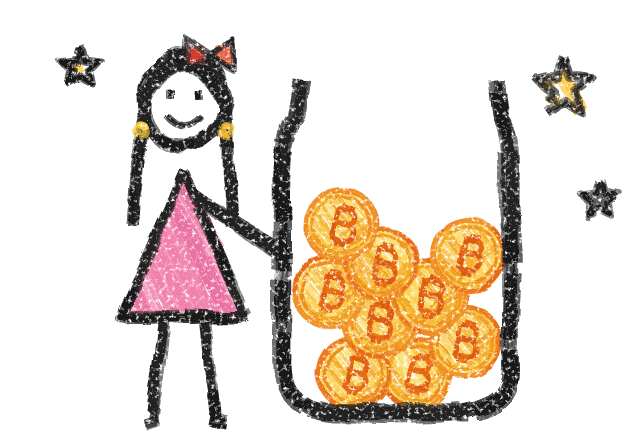

A jar that holds a beneficiary's real Bitcoin and pays them a small allowance under a fixed rule, until handover makes it theirs alone.
Testnet demo. Test coins only, no real money.


A fixed rule
Until handover, a jar can only pay the beneficiary's address, and only up to a cap.
On the record
Every top-up and payment is public, and so is every refusal. See the transactions
Theirs at handover
On the unlock date the jar and its Bitcoin become the beneficiary's alone. Every adult's access ends.
How it works
-

A benefactor makes a jar
The beneficiary's Bitcoin address, a monthly cap, an unlock date and two or three guardians.
-

Anyone tops it up
Grandparents, aunts, friends: anyone with Bitcoin can put some into the jar from their own wallet or exchange app. In this demo, a testnet wallet.
-

The beneficiary gets an allowance, then the jar
The beneficiary is paid the allowance each period. At handover, on or after the unlock date and once the guardians confirm the beneficiary's own account, the jar and all its Bitcoin become theirs. Every adult's access ends.
Where the map goes next
Not built yet. This is where we want to take the jar, and you can tell us where to go.
-
You are here
Make a jar, top it up, a monthly cap, handover. Live on testnet.
-
Yield Planned
Whatever goes into a jar will earn yield while it waits, just for being left alone. The rate isn't set yet.
-
What should we add?
Tell us what you would want on this map.
Suggest a feature
Why a jar?
- An exchange account
- The exchange holds the coins, not the family.
- A seed phrase in a drawer
- It gets lost, or it gets found.
- A shared wallet with a relative
- That relative can spend it.
- A Sats Jar
- A fixed rule pays a small allowance. Handover makes the rest theirs alone.
Questions
Do I need to own Bitcoin?
Whoever tops a jar up does. A jar is filled with Bitcoin sent from any Bitcoin wallet or exchange app, so a relative with no Bitcoin can't fill one yet. We never hold anyone's Bitcoin keys.
Can the beneficiary spend it early?
Not outside the rule. Before handover a jar pays a capped allowance, and only to the one address registered for the beneficiary. An emergency payment needs more than one guardian to approve it, and it waits out a public delay during which it can be cancelled.
What happens on the unlock date?
Handover. The guardians confirm the beneficiary's own account, a public delay passes, and the jar moves to that account. Its Bitcoin moves to an address only the beneficiary's recovery phrase can recover. Every adult's access ends there.
Do I need to understand blockchains?
No. You never see accounts, fees or signing prompts. The one place Bitcoin shows is where you send it in, and the beneficiary's address.
Is this real money?
Not yet. This demo runs on Bitcoin's test network, and test coins have no value. What that means
Who do I have to trust?
A short list, and we name all of it. See what you are trusting
Set someone up for life.
See it on testnetTestnet demo. Test coins only, no real money.